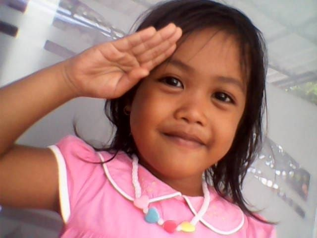
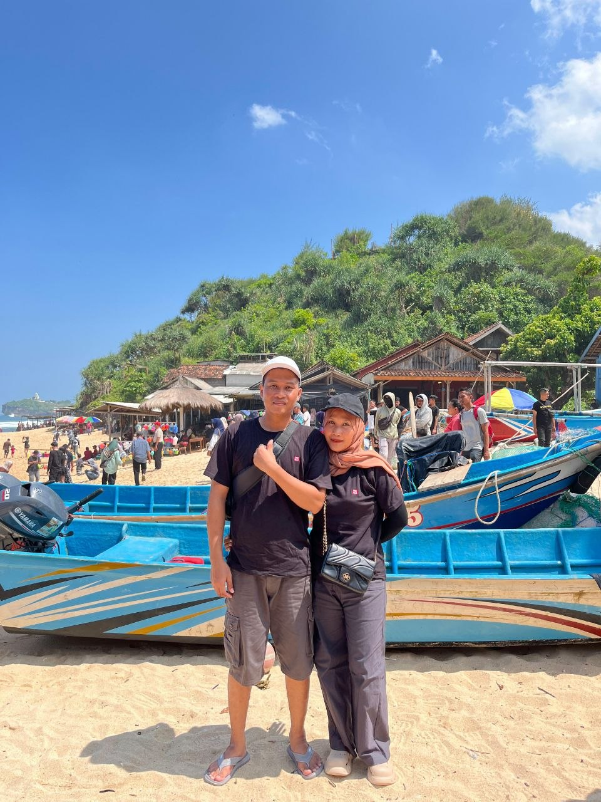
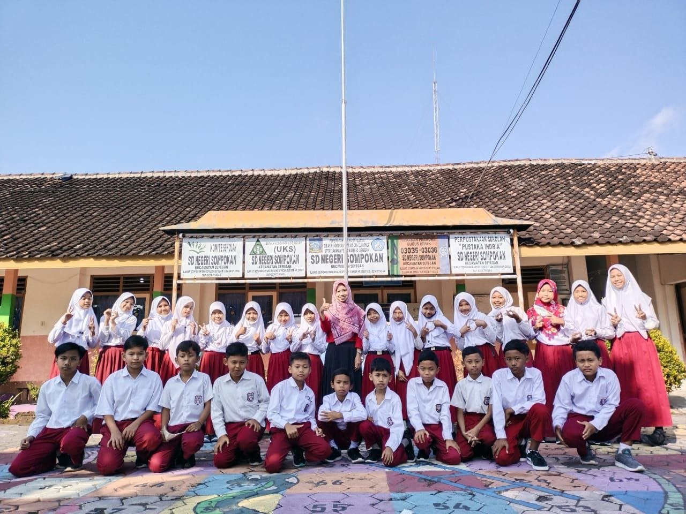
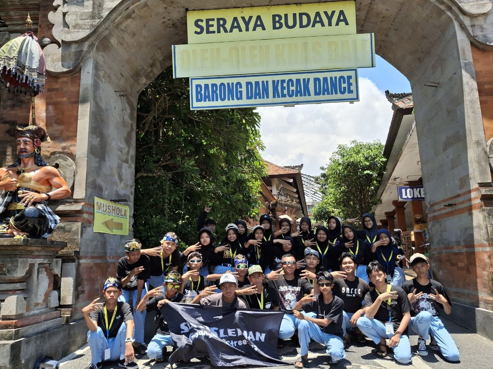
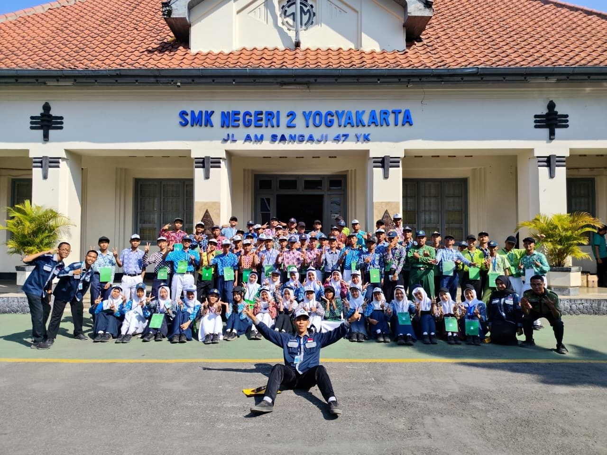
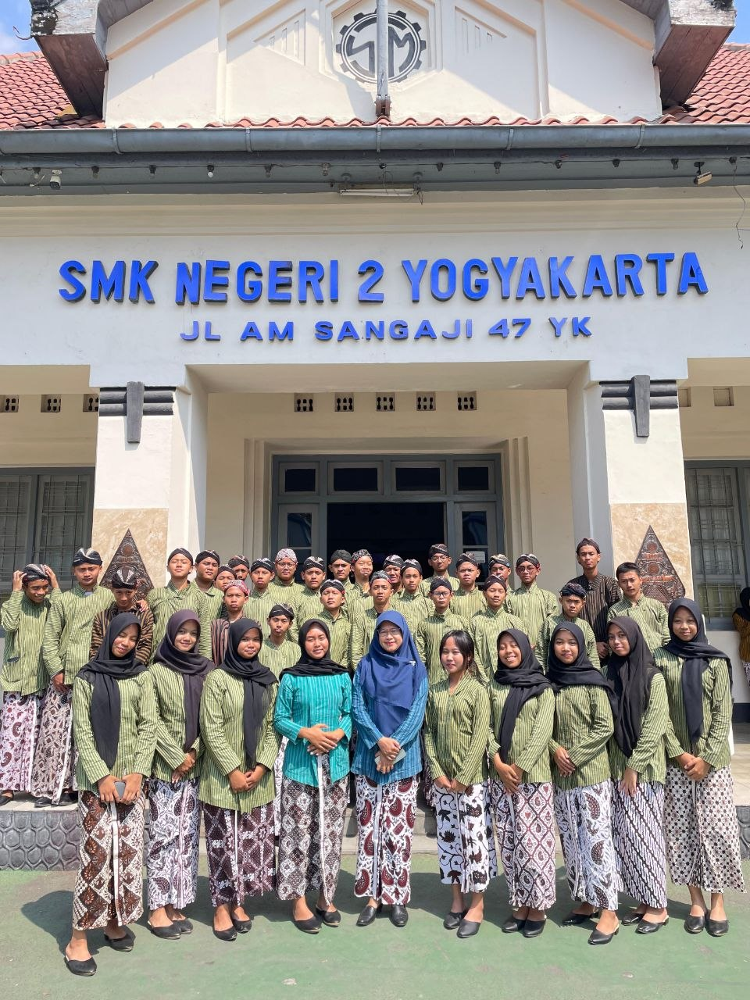

|
|
|
|
Arsip Kenangan
── Sebab Waktu Tak Selalu Membawa Kita Kembali ──
|
✧ Selamat Datang di Ruang Kenanganku ✧
Setiap waktu menyisakan cerita, dan setiap cerita
memiliki bagian yang layak untuk dikenang. Di
ruang kecil ini, kusimpan beragam potret dari
perjalanan yang pernah kulalui, mulai dari
hal-hal sederhana hingga momen yang meninggalkan
kesan mendalam.
Silakan menelusuri setiap bingkai yang tersimpan.
Barangkali, di antara gambar-gambar ini, ada
sepotong kisah yang dapat mengingatkan kita bahwa
sesuatu yang telah berlalu tetap dapat hidup
dalam ingatan.
|
✿ Album Kenangan ✿
Enam bingkai, enam cerita, dan kenangan
yang memiliki tempatnya sendiri.
|
|

Sepenggal Masa Kecil
Setiap awal menyimpan cerita yang kelak kurindukan
|

Bahagia dalam Sederhana
Kebahagiaan yang hadir dalam
kesederhanaan.
|

Kisah yang Terbingkai
Hal-hal kecil yang menyimpan
makna besar.
|
|
|

Tentang Kebersamaan
Sebab beberapa kisah terasa lebih
hangat ketika dibagi bersama.
|

Jejak di Persinggahan
Sebuah tempat sederhana dengan
cerita yang istimewa.
|

Yang Tinggal dalam Ingatan
Sebagian waktu mungkin berlalu,
tetapi kesannya tetap tinggal.
|
|
❝ Tidak semua yang berlalu benar-benar hilang,
sebab sebagian menetap sebagai kenangan. ❞
|
Terima kasih telah menyusuri kenanganku.
Semoga setiap kisah di sini mengingatkanmu
bahwa hal sederhana pun layak untuk dikenang.
───────── ❦ ─────────
❧ Kembali ke Laman Utama
|
© 2026 Serambi Senandika | Diah Ayu
|